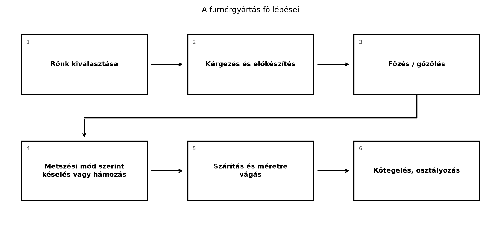

A furnér nem csupán „vékony fa”. A modern bútorok nagy része furnérozással készül: kívül értékes fa rajzolata, alatta gazdaságos lapanyag, hátul ellensúlyozó réteg. Ha az asztalos nem ismeri a furnérgyártást és a rajzolatot, rossz furnért választ, rosszul illeszt, és a kész bútorlap vetemedhet vagy foltos lehet. Ebben az alfejezetben a furnér a rönktől a felhasználásig kísérjük végig.
Képzelj el egy hatalmas, gőzölt fűrészrönköt, amelyből a gép vastag papírlaphoz hasonló, de faanyagú lemezeket emel le. A kiskés úgy dolgozik, mint egy gyalu: a rönk felülete megmarad, és a levett lemez minősége függ attól, hogy a rönköt milyen irányból metszi a kés. A levett lemezeket a gyártó azonnal kötegbe rakja, mert a rajzolat csak így marad folyamatos. Ezt a köteget az asztalos később szétválogatja, tükrözéssel vagy folyamatos illesztéssel.
Az alábbi folyamatábra a furnérgyártás fő lépéseit mutatja:

Furnér alatt vékony fa- vagy faalapú lemezt értünk, amelyet elsősorban rönkből állítanak elő hámozással, késeléssel vagy fűrészeléssel, és hordozófelületre ragasztva, rétegelt lemezben vagy más faipari alkalmazásban használnak. A furnér vastagsága jellemzően a tizedmillimétertől néhány milliméterig terjed.
A díszfurnér (színoldali furnér, felületfurnér) a látható felületre kerül, ezért a rajzolat és a szín a legfontosabb. A vakfurnér (alátét furnér, ellenfurnér) a hordozó hátoldalára kerül, és elsősorban a feszültség kiegyenlítésére szolgál. A furnérszalag keskeny, tekercselt furnér, amelyet élzáráshoz használnak.
Szabály. A furnérterméket mindig a felhasználási oldal alapján nevezd meg: színoldali díszfurnér, hátoldali vakfurnér, élzáró furnérszalag. Így elkerülhető, hogy az alacsonyabb minőségű vakfurnért felületre szabd.
Továbbvitt eredmény. A furnérfajták, a rajzolat és a válogatás ismerete szükséges a Furnér szabása, illesztése és táblásítása; furnérteríték alfejezethez, valamint a Rétegelt lemez, bútorlap és táblásított lap fejezetben a rétegelt szerkezet megértéséhez.
A furnérgyártás előkészítése minden módnál hasonló: a rönköt kérgezik, hosszabb darabokra darabolják, és főzik vagy gőzölik. A hőkezelés a farostokat puhábbá, rugalmasabbá teszi, így a kés kisebb ellenállással vág, és a furnér kevésbé reped. A gőzölés időtartama és hőmérséklete a fafajtól, a rönk átmérőjétől és a kívánt színtől függ (tájékoztató érték: lágyabb fafajoknál rövidebb idő, keményebb fafajoknál hosszabb; ellenőrizendő: gyártói technológia).
A hámozott furnér úgy készül, hogy a rönköt a forgástengelye körül forgatják, és egy hosszú, álló kés spirálban folyamatos lemezt hámoz le a palástról. A hámozógép a rönk teljes palástját lebontja, mint a papírtekercs.
A késelt furnér gyártásakor a rönk vagy a rönk egy része rögzített, és a kés vékony réteget metsz le a sík felületről. A késelés három fő módja:
A késelt furnért elsősorban felületi díszfurnérnak használják, mert a rajzolat szebb, mint a hámozott furnéré.
A fűrészelt furnér a legdrágább és a legkevésbé elterjedt: a rönköt nem késsel, hanem fűrésszel vágják vékony lemezekre. A fűrészelés a fa szövetét kevésbé roncsolja, de sok anyagot tesz fűrészporrá. A fűrészelt furnér vastagabb, jellemzően 0,8–4 mm (tájékoztató tartomány, ellenőrizendő), és olyan helyen használják, ahol a felületnek tömörfa jellege vagy nagyobb mechanikai terhelhetősége kell. A mai gyakorlatban ritka, mert a késelt furnér is kiváló felületet ad, de a régiségek, intarziás munkák és restaurálások esetében találkozhatunk vele.
A díszfurnér a felületre kerül, és bútoron, ajtón, belsőépítészeti burkolaton látható. A vakfurnér a hordozó hátoldalára kerül, még akkor is, ha nem látható, mert kiegyenlíti a felületi furnér zsugorodásából és dagadásából származó feszültséget. Vakfurnérként gyakran használnak olcsóbb, egyenletes hámozott furnért.
Szabály. Hordozólemez furnérozásakor mindig tervezzünk ellenfurnért a másik oldalra. Ha az egyik oldal díszfurnér, a másik oldal legyen vakfurnér; ha mindkét oldal díszfurnér, akkor a két oldal nedvesség- és húzási viselkedését is össze kell hangolni, és azonos rostirányú furnért használjunk.
A színezett furnér olyan természetes furnér, amelyet átfestettek, pácoltak vagy impregnálással színeztek. Ezzel egységes szín érhető el, de a rajzolat természetes marad. A rekonstruált furnér (műszaki furnér) faanyagból vagy farostból újraépített, gyakran ragasztott lap, amelyet színre, méretre és rajzolatra is lehet szabályozni. A rekonstruált furnér nem azonos a laminált műfurnérral; a faelemekből áll össze.
A furnérszalag keskeny, általában 20–60 mm széles késelt vagy hámozott furnér, amelyet élzárásra használnak. Lehet tekercsben, ragasztóréteggel bevonva (előragasztott élfurnér) vagy öntapadós változatban. Az élfurnér vastagsága általában 0,4–0,6 mm (ellenőrizendő: gyártói adat).
A furnér mérete a gyártási módtól és a rönk méretétől függ. A késelt furnér hossza a rönkdarab (tőke) hosszával egyezik, szélessége a késelt tőkefelület szélességétől függ. A hámozott furnér a rönk palástjából folyamatos lemez, ezért hosszú tekercs vagy lapméret vágható belőle.
Tájékoztató értékek (ellenőrizendő: termékszabvány/gyártói katalógus): - hámozott furnér: 0,5–3 mm vastag; - késelt díszfurnér: 0,4–2 mm vastag; - fűrészelt furnér: 0,8–4 mm; - furnérszalag: 0,4–0,6 mm; - késelt furnérlap mérete gyakran a rönk hosszának és a kés szélességének függvénye, de jellemzően 2–3 m hosszú és 0,1–0,4 m széles (tájékoztató tartomány).
A késelt furnér gyártásakor a rönköből egymás után levett lemezeket a gyártó kötegbe rakja, és a köteget számozza. A furnérkötegben a lemezek egymás után következnek: ha két szomszédos lapot egymáshoz illesztenek, a rajzolat szinte folyamatosan folytatódik. A köteget a gépből kikerülő sorrendben kell tárolni, mert a furnérosztályozás és a későbbi válogatás könnyebb.
Rajzolatfajták:
| Rajzolat | Keletkezése | Jellemző megjelenés | Felhasználás |
|---|---|---|---|
| Tükrös | Negyedelt késelés, a vágási sík a bélsugarakkal párhuzamos (sugármetszet) – a bélsugarak fényes foltként látszanak | Szabályos, fényes tükörfoltok (tölgy) | Asztallap, ajtólap, parketta |
| Fladeres | Lapos késelés húrmetszetből | Széles, hullámos évgyűrűrajzolat | Bútorlap, szekrény oldala |
| Csíkos | Negyedelt vagy félnegyedelt (rift) késelés, a vágási sík kis szöget zár be a bélsugarakkal – az évgyűrűk egyenes, párhuzamos csíkokként látszanak, tükör alig | Párhuzamos, egyenes csíkok | Modern felületek, sötét pácolás |
| Gyökérfurnér | Gyökértőből, göcsös részből | Csillogó, kusza, göcsös rajzolat | Intarzia, kisebb betétek |
| Csomós furnér | Ágövből, csomós részből | Szabályos vagy szabálytalan csomófoltok | Rusztikus felületek |
A rajzolat és a gyártási mód összefüggése miatt az asztalos a megrendelés előtt mindig egyeztet: tükrös tölgyfurnért keressen negyedelt késelésű anyagot, fladeres diófurnérhoz lapos késelést válasszon.
A furnér minőségét a hordozófurnéroknál a gyártó, a díszfurnéroknál vizuális osztályozás határozza meg. A leggyakoribb hibák:
Szabvány. A furnérok osztályozására, méret- és vastagság-tűrésére európai szabványok vonatkoznak, például az ISO 18775 (ellenőrizendő: pontos szabványszám és hatály); a díszfurnér minőségi osztályait jellemzően a gyártó vagy a kereskedő adja meg. Az MSZ EN 635 sorozat a rétegelt lemez felületi osztályozására vonatkozik (ellenőrizendő). A gyártói adatlap az osztályozást és a nedvességtartalmat is megadja.
Minőségellenőrzés. A beérkezett furnért mindig ellenőrizd: vastagságmérővel több ponton mérj, nézd meg a rajzolatot és a színt, vizsgáld a nedvességtartalmat, és hajlítsd meg a furnérlapot, hogy észrevedd a belső repedést. A nedvességtartalom jellemzően 8–12% (ellenőrizendő: gyártói adat).
A furnérozott lap és a tömörfa közötti választás a termék céljától, a felület nagyságától és az anyagköltségtől függ.
| Szempont | Tömörfa | Furnérozott lap |
|---|---|---|
| Anyagfelhasználás | A teljes darab fából | Csak a felületen értékes fa |
| Rajzolat | Természetes, szerkezetfüggő | A gyártási mód szerint válogatható |
| Vetemedés | Nagyobb, ha a méretek változnak | Kiegyensúlyozott, ha ellenfurnér van |
| Javíthatóság | Csiszolható, újrafényezhető | A furnér vékony, átcsiszolni tilos |
| Megjelenés | Tömörfaérzet | Színoldali rajzolat, alatta lapanyag |
| Ár | Általában magasabb | Gazdaságosabb, különösen nagy felületen |
Figyelem. A furnérozott felületet soha ne azonosítsd „tömör fának” a vevő felé. Írd le, hogy furnérozott lap, és tüntesd fel a hordozót és a furnér fafaját.
Recept. A furnérköteget a következő lépésekben készítsd elő az illesztéshez:
Hiba: a kész lap felpúposodik.
Ok: hiányzó vagy nem megfelelő vakfurnér, illetve a furnér és a hordozó
nedvességtartalma nagyon eltér.
Javítás: a másik oldalra megfelelő vakfurnért kell felragasztani;
száradás után újrapróbálni.
Hiba: a rajzolat a felületen „ugrós”.
Ok: a furnérköteget összekeverték, és a szomszédos lapok sorrendje
megbomlott.
Javítás: a válogatásnál mindig a kötegsorrendet kell követni.
Hiba: átcsiszolt furnér.
Ok: a csiszológép beállítása túl erős, vagy a furnér vékony és a felület
hullámos.
Javítás: csak a felületi lakkréteget szabad nagyon finoman, a furnér
vastagságának ismeretében csiszolni. Mindig hagyjunk
furnérvastagság-tartalékot.
Hiba: eltérő szín a szomszédos lapok között.
Ok: a gyártási tételben vagy a kötegben keveredett a szín.
Javítás: azonos tételből válasszunk, és a színoldalt a beépítés szerint
azonos irányba nézessük.
Egy asztalos tölgy furnérozott étkezőasztalt készített. A megrendelő reklamált: a lap két éle felpúposodott, és a felületi furnéron hajszálrepedés jelent meg. A vizsgálat során kiderült, hogy a hordozó lap hátoldalára nem került vakfurnér, csak a színoldalt borította díszfurnér. A felületi furnér zsugorodása a hordozó felső rétegét megfeszítette, a lap meghajlott, és a furnér megrepedt. A tanulság: a furnérozás mindig kétoldali feladat, és a vakfurnér nem „felesleges anyag”.
Válaszold meg az alábbi kérdéseket, majd nézd meg a megoldásokat.
1. feladat (A)
Add meg a furnér definícióját, és sorold fel a három fő gyártási
módját.
2. feladat (A)
Melyik furnért választod felületi díszfurnérnak? Indokold meg.
a) hámozott furnér, egyenletes, kissé szürke;
b) késelt tölgy furnér tükrös rajzolattal;
c) fűrészelt tölgy furnér, amely enyhén hullámos felületű.
3. feladat (B)
Egy asztallap felületét 1,2 m² nagyságú területen furnérozod. A
díszfurnér lapok hossza 2,4 m, szélessége 0,3 m. Hány darab furnérlapot
kell felhasználni, ha a szükséges ráhagyás és illesztési veszteség 15%?
Számold ki a szükséges furnérterületet, majd a lapok darabszámát, és
egész számra felfelé kerekíts.
4. feladat (B)
Egy bejövő furnérkötegből mintát vettél: az egyik lap vastagsága 0,58
mm, a másik 0,62 mm, a harmadik 0,61 mm (tájékoztató érték). A névleges
vastagság 0,60 mm, a gyártói tűrés ±0,03 mm. Feleljen meg a tűrésnek a
minta? Indokold.
5. feladat (C)
Egy megrendelő nagy felületű, sötéten pácolt, modern szekrényajtót kér.
Tölgy furnérból melyik rajzolatot választod: fladerest, tükröst vagy
csíkost? Indokold meg a választást a pácolás és a modern megjelenés
szempontjából.
6. feladat (D)
Készíts furnérválogatási ellenőrzőlistát egy 12 lapból álló késelt tölgy
furnérköteghez, amelyet egy 600 mm széles, 1800 mm hosszú bútorlap
elülső felületére és a hátoldalára szánnak. A lista tartalmazza a fontos
vizsgálati pontokat és a szükséges méréseket.
Önellenőrzés – válaszok
Feladatok megoldásai
1. feladat (A)
Furnér: vékony falemez, amelyet rönkből hámozással, késeléssel vagy
fűrészeléssel állítanak elő, és felületre ragasztva, rétegelt lemezben
vagy más faipari alkalmazásban használnak. Gyártási módok: hámozás,
késelés (lapos, félkörös, negyedelt), fűrészelés.
2. feladat (A)
Felületi díszfurnérnak a késelt tölgy furnér tükrös rajzolattal a
legjobb, mert a késelt furnér vékony, egyenletes, és a rajzolat szép,
tükrös. A hámozott furnér nem felületi célra való, a fűrészelt enyhén
hullámos és vastagabb, ezért kevésbé alkalmas közvetlen felületre.
3. feladat (B)
Adott: felület = 1,2 m²; ráhagyás 15%, tehát szükséges terület = 1,2 m²
× 1,15 = 1,38 m².
Egy furnérlap területe: 2,4 m × 0,3 m = 0,72 m².
Szükséges lapok: 1,38 m² ÷ 0,72 m²/lap = 1,9167 → felfelé kerekítve 2
lap.
Ellenőrzés: 2 × 0,72 m² = 1,44 m² ≥ 1,38 m², tehát elegendő.
4. feladat (B)
A tűrés ±0,03 mm egy névleges érték körül. A névleges vastagság 0,60 mm,
ezért a ±0,03 mm tűrésmező 0,57–0,63 mm; a három mért érték 0,58–0,62 mm
között mozog. Mindhárom mért érték a tűrésmezőn belül van. A feladat
célja a tűrés értelmezése: a névleges mérethez viszonyított tűrésmezőt
kell megadni, és a mért értékeket abba kell vetni.
5. feladat (C)
Sötéten pácolt, modern szekrényajtóhoz a csíkos rajzolat a legjobb, mert
az egyenes, párhuzamos csíkok modern, nyugodt felületet adnak, és a
sötét pác a csíkok közötti kontrasztot kiemeli. A tükrös rajzolat erős,
hagyományosabb hatású, a fladeres a húrmetszet miatt széles hullámai
zavaró lehet egy direkt, letisztult fronton.
6. feladat (D)
Lehetséges ellenőrzőlista: 1. A furnérköteg lemezeit a gyártási
sorrendben kiteríteni, és a rajzolatot folytonosan ellenőrizni. 2.
Minden lapon vizsgálni a felületi hibákat (repedés, göcs, folt, élhiba),
a színoldalt és a vastagságot. 3. Vastagságmérővel minden lapot 3 ponton
mérni, és az eltérést a gyártói tűréssel összevetni. 4. A színoldali
furnérlappá kijelölt lapokat párokba osztani; a hátoldali vakfurnért
külön csoportba tenni. 5. A furnér és a hordozó nedvességtartalmát
mérni, és az eltérést 1–2 %-on belül tartani (tájékoztató). 6. A
kiválasztott furnérokat szárazon a bútorlapra rakni, és erős fényben
megnézni a rajzolatot, a színt és a hézagmentességet. 7. A terítéket
felragasztás előtt megjelölni, hogy a préselés során a sorrend ne
változzon.
A furnér vékony fa lemez, amelyet rönkből hámozással, késeléssel vagy fűrészeléssel állítanak elő. A rönköt előzőleg gőzölik, hogy a farostok puhuljanak, és a furnér ne repedjen. A hámozott furnér széles, szabálytalan rajzolatú, elsősorban rétegelt lemezhez és vakfurnérhoz való. A késelt furnér a legfontosabb felületi díszfurnér; a lapos, félkörös és negyedelt késelés eltérő rajzolatot ad (fladeres, virágos, tükrös/csíkos). A fűrészelt furnér vastagabb, ritka és drága. A furnérkötegekben a lemezek sorrendje folyamatos rajzolatot biztosít; tükrözésnél (könyvszerű illesztés) a köteg két egymást követő lapja közül az egyiket könyvlapként átfordítjuk, így a rajzolat a fugára tükrös lesz; folyamatos illesztésnél a lapokat azonos irányban, sorrendben toljuk egymás mellé. A furnér minőségét a vastagság, a felületi hibák, a szín és a rajzolat egyöntetűsége határozza meg; az ellenőrzésnél mindig a gyártói adatot és a termékszabványt kell követni. A furnérozott lapot mindig két oldalról furnérozzuk, a hátoldalra vakfurnért kell ragasztani. Továbbvitt eredmény: a furnérfajták, a rajzolat és a furnérköteg-kezelés ismerete közvetlenül szükséges a Furnér szabása, illesztése és táblásítása; furnérteríték alfejezetben, és alapja a Rétegelt lemez, bútorlap és táblásított lap értelmezésének is.